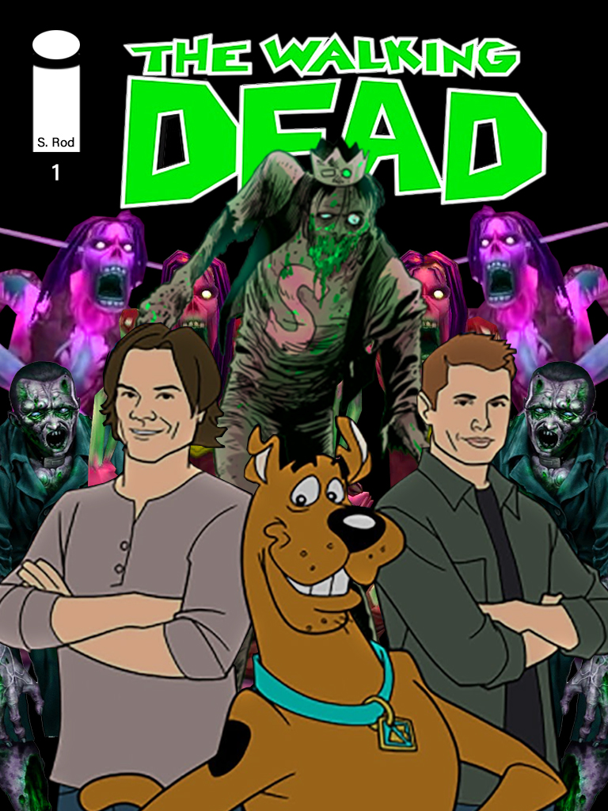
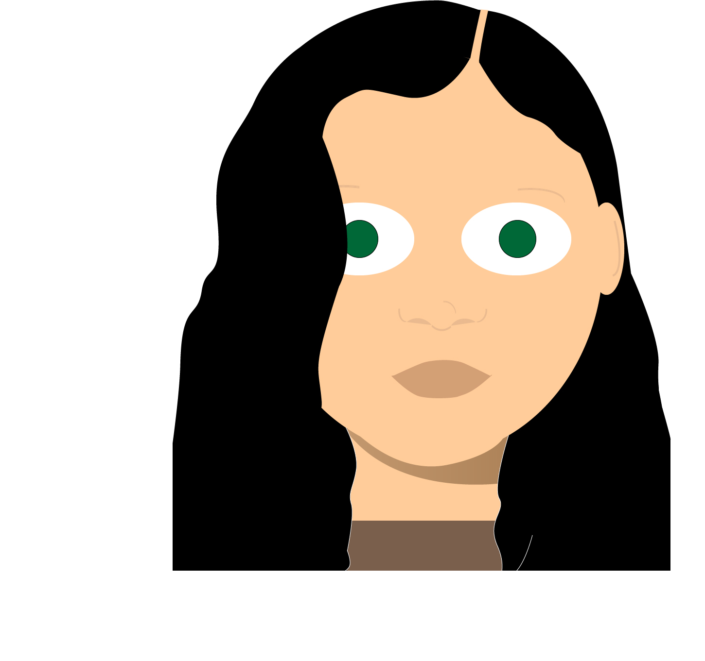

ASSIGNMENT: Digital Imaging
Description:


citations
- Capcom. Resident Evil Zombie. Pinterest , www.pinterest.es/pin/522276888018504853/.
- Bros, Warner. Scoobynatural. SYFY, 2018, www.syfy.com/syfy
wire/supernatural-inside-the-scoobynatural-episode-with-jared-padalecki-andrew-dabb-and-eugenie.
- Entertainment, Blizzard. Risen Creeper. WOWWIKI, wowwiki.wikia.com/wiki/Risen_Creeper.
- Entertainment, Blizzard. Zombie Chow. WOWPEDIA, wow.gamepedia.com/Zombie_Chow.
- Marsh , Steve, et al. Zombie Jughead. Vulture, www.vulture.com/2013/10/afterlife-with-archie-comic-Roberto-Aguirre-Sacasa-interview.html.
- Moore , Tony. The Walking Dead Comic Logo. Back From the Depths, 2003, www.backfromthedepths.co.uk/thetheatreofterror/2011/comic-scans/top-20-the-walking-dead-comic-covers/.